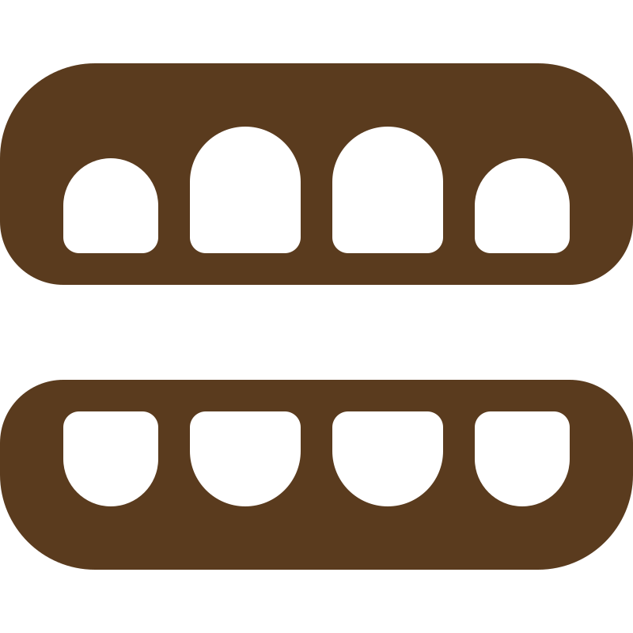

OSTEOPATA A ROMA
Soffri di dolore alla mandibola, tensioni al viso o difficoltà ad aprire la bocca? Se vivi a Roma,
l’osteopatia può aiutarti a ritrovare sollievo in modo dolce e naturale.
Mi occupo del trattamento osteopatico dei disturbi dell’articolazione temporo-mandibolare (ATM),
spesso legati a stress, bruxismo o tensioni cervicali. Questi disturbi possono causare dolore alla
mandibola, mal di testa, rigidità del collo o difficoltà nella masticazione. Attraverso un approccio
delicato e personalizzato, aiuto a rilassare le tensioni e migliorare la mobilità della mandibola.
L’osteopatia è indicata in caso di:
Il mio approccio è dolce, rispettoso e centrato sulla persona, ideale anche per chi è sensibile o vive situazioni di stress. L’obiettivo è offrire un sollievo concreto già dalle prime sedute. Studio di osteopatia a Roma – su appuntamento.
PRENOTA UN APPUNTAMENTO